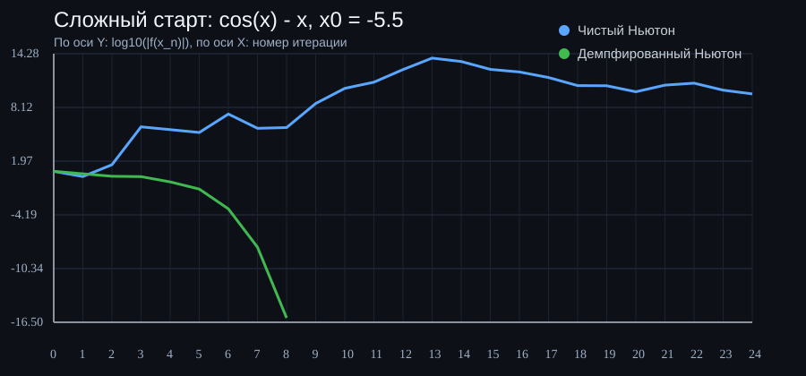
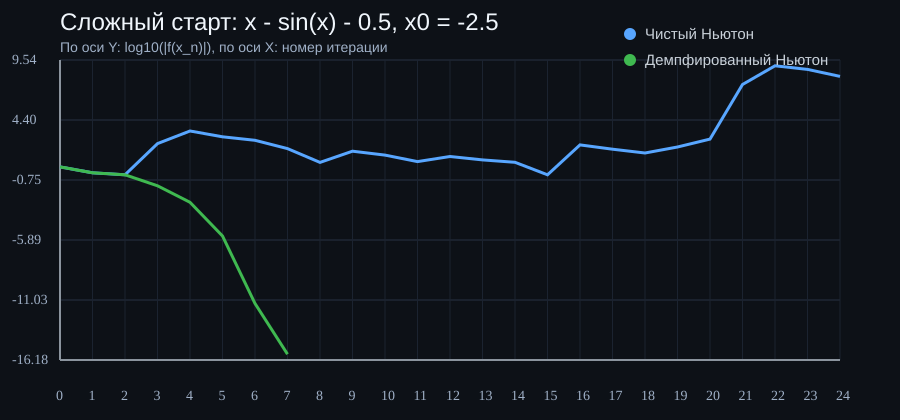
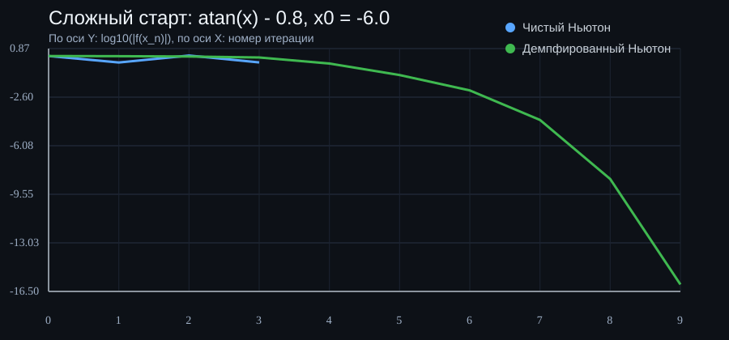

Суть проекта
Что именно здесь исследуется
Геометрия параболы
Сначала анализируется экстремум квадратичной функции, чтобы понять, сколько вообще существует вещественных корней.
Численная устойчивость
Вместо прямой итерации по \(f(x)\) используется сглаженное преобразование через арктангенс.
Сравнение подходов
На простых задачах обычный Ньютон часто быстрее, но на плохих стартах демпфированный вариант показывает лучшую устойчивость.
Формулы
Математическая схема
Экстремум квадратичной функции
$$f(x) = a x^2 + b x + c$$
$$x^\* = -\frac{b}{2a}$$
Знак \(f(x^\*)\) позволяет определить, сколько существует вещественных корней.
Стабилизирующее преобразование
$$\varphi(x) = \arctan\!\left(s f(x)\right)$$
$$\varphi'(x) = \frac{s f'(x)}{1 + \left(s f(x)\right)^2}$$
Арктангенс сжимает слишком большие значения функции и делает шаги метода мягче.
Демпфированный шаг
$$\delta = \frac{\varphi(x)}{\varphi'(x)}$$
$$\lambda = \frac{\arctan(|\delta|)}{|\delta|}$$
$$x_{k+1} = x_k - \lambda \delta$$
Если шаг слишком велик, коэффициент \(\lambda\) автоматически уменьшает его длину.
Алгоритм
Как программа ищет корни
Определение типа задачи
Если \(a = 0\), программа переходит к линейному случаю. Иначе остаётся в квадратичном режиме.
Поиск экстремума
Вычисляется \(x^\* = -b / 2a\), затем проверяется значение функции в этой точке.
Выбор стартов
Для двух корней берутся интервалы со сменой знака слева и справа от экстремума, а их середины используются как начальные приближения.
Итерации Ньютона
В зависимости от режима используется либо классический шаг Ньютона, либо его демпфированная версия с арктангенсом.
Сравнение
Квадратичные задачи
| Уравнение | Старт | Чистый Ньютон | Демпфированный | Вывод |
|---|---|---|---|---|
| \(x^2 - 3x + 2 = 0\) | -2.116025 | 7 итераций | 7 итераций | Одинаково |
| \(x^2 - 2 = 0\) | 1.366025 | 3 итерации | 3 итерации | Одинаково |
| \(x^2 + 100x - 1 = 0\) | 26.207107 | 5 итераций | 20 итераций | Чистый быстрее |
| \(x^2 - 10^6 = 0\) | 500.500250 | 6 итераций | Не сошёлся за 100 | Чистый лучше |
Сложные функции
Где демпфирование действительно полезно
| Функция | Старт | Чистый Ньютон | Демпфированный | Вывод |
|---|---|---|---|---|
| \(\cos x - x = 0\) | \(x_0 = -5.5\) | Не сошёлся за 60 шагов | Сошёлся за 8 шагов | Демпфирование сильно лучше |
| \(x - \sin x - 0.5 = 0\) | \(x_0 = -2.5\) | Не сошёлся за 60 шагов | Сошёлся за 6 шагов | Демпфирование лучше |
| \(\arctan x - 0.8 = 0\) | \(x_0 = -6.0\) | Срыв на ранних шагах | Сошёлся за 9 шагов | Демпфирование лучше |
| \(e^{-x} - x = 0\) | \(x_0 = 0\) | 5 шагов | 5 шагов | Почти одинаково |
Графики
Сходимость по итерациям
На графиках по оси Y показана невязка \(\log_{10}(|f(x_n)|)\), по оси X — номер итерации.



Итог
О чём этот проект на самом деле
Это не просто решатель квадратных уравнений, а маленькая витрина про численные методы: где классический Ньютон блистает скоростью, а где более осторожный демпфированный вариант выигрывает устойчивостью.